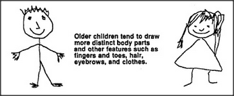
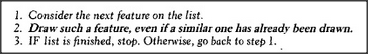

That body-head drawing seems very wrong to most adults, yet it seems to please many children. Does it really look like a person to those children? That seems like a simple question, but it is not — for we must remember that a child is not a single agent and that various other agencies inside a child's mind may not be satisfied at all. At the moment, those other agencies are not in control and have little effect. Yet if some creature came on the scene that really looked like that, most children would be terrified. It does not make much sense to speak of what a person really sees, because we have so many different agencies.
What happened in the intervening years to make the older children draw the body separately? This could come about without even making any change in the list of features and relations we used in the previous section. It would need only a small change in step 2 of our drawing procedure:
This ensures that every feature mentioned in the list will be represented only once in the drawing, even if two such features look alike. Of course, this requires some ability to count each feature only once, and never twice. How interesting that in order to make mature, realistic drawings, the child could exploit the same kind of ability it must acquire in order to count things properly!
To be sure, we could explain the child's progress in other ways. That new and more realistic picture could come from adding a neck to the feature list, for that would demand a separate body and head. It might suffice simply to impose an additional constraint or relationship: that the head be above the body. One might argue that the younger child never had a clear concept of a separate and distinct body feature in the first place; after all, there are many things that you can do with your arms and legs or with your head — but your body only gets in the way.
In any case, after mastering the art of making these body-head drawings, many children seem to progress rather slowly in the art of making personal portraits, and these types of childish drawings often persist for some years. I suspect that after children learn to make recognizable figures, they usually move on to face the problems of representing much more complicated scenes. As they do this, we should continue to appreciate how well children deal with the problems they set for themselves. They may not meet our own grown-up expectations, but they often solve their own versions of the problems we pose.